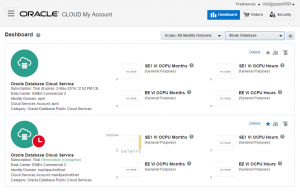
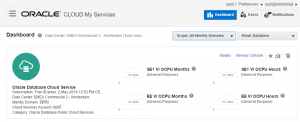

The Oracle Cloud has two interfaces that are very similar visually and it’s easy to get lost and don’t find what we are looking for in the menus.
|  |  |
You see the difference: My Account on the left and My Service on the right. They look similar, but manage a different level of the Cloud Services.
My Account dashboard shows the services subscribed. You can subscribe new services from there (the Orders button). This is the interface for the Oracle Cloud Services customer which is your company. You connect to it with your Oracle Single Sign-On account.
My Services is where you actually manage the services in all details. This is the interface for the administrator: provisioning, monitoring of utilization and uptime. Each service is associated with an Identity Domain for authentication, and is physically located in a data center.
Actually, when you subscribe to Oracle Cloud Services you receive your credentials for the Identity Domain, the url to connect to the My Account interface, and the url to go directly to the My Services.
From the My Account you can navigate to My services.
So, if you are clicking around and don’t find what you want, then maybe your are on the My Account interface. Go to My Services and this is where you can open the Service Console.
{kind=link}
{kind=link}
{kind=link}